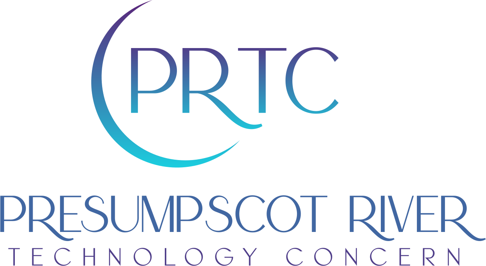

Website design and technical consulting
We work with you to design a site that is right for you. A site that reflects your individual style and choices. We can create a site that you can maintain by yourself. Or we can maintain it for you.
We can add e-commerce capabilities to your site. Whether you need simple purchasing or subscription management, we can help you to find the right tools and get them integrated into your site.
We build custom applications tailored to your specific needs. Whether you're looking for a simple utility or a complex system, we can help you bring your ideas to life.
The Presumpscot River Technology Concern (PRTC) (aka Rachel Nagle) is a freelance programmer and designer. She doesn’t actually live anywhere near the Presupscot River; she just really likes the name.